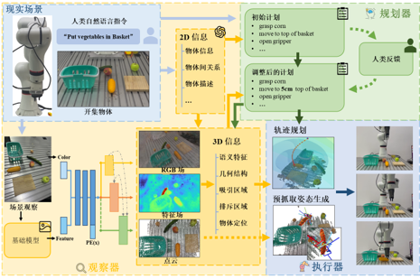
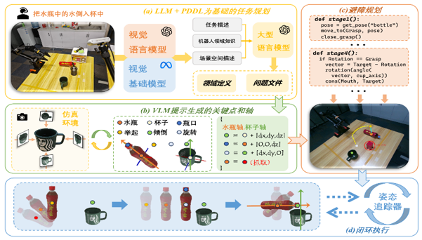
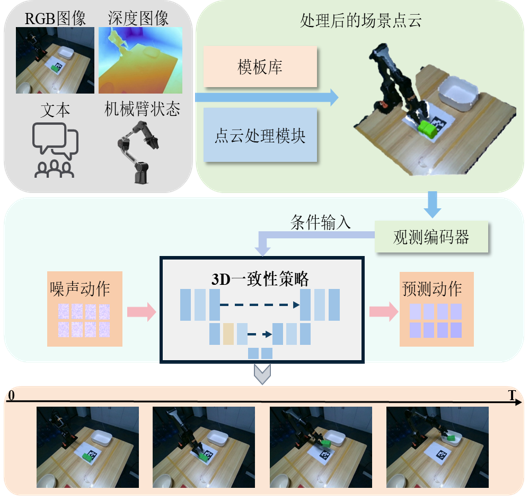

371Google Scholar 引用量
13篇期刊 / 会议论文
5篇第一作者 / 共同一作论文
1项国家级竞赛奖项 / 奖学金
研究方向 具身智能 · 世界模型 · AIGC（图像与视频生成）
教育经历 
2019.09–2026.08浙江工业大学 · 控制科学与工程博士（硕博连读）
导师：欧林林教授、禹鑫燚教授｜信息处理与自动化研究所
研究方向：模型高效推理、AIGC、具身智能、世界模型
2024.04–2025.04新南威尔士大学（UNSW Sydney）CSC 公派联合培养
身份：联合培养博士研究生｜导师：Dong Gong｜Artificer AI Lab
研究方向：AIGC、世界模型
2015.09–2019.06浙江工业大学 · 自动化本科
科研与访问经历 
2022.06–2026.08浙江大学访问学生
导师：沈春华教授、陈昊研究员｜CAD&CG 国家重点实验室
研究方向：高效微调、AIGC、具身智能
实习与机器人研发经历
杭擎智能
具身智能算法实习生｜2025.09–2026.03

语义三维重建与任务规划
- 感知与建图：融合多视角 RGB-D 与开放词汇二维视觉特征，将语义蒸馏至 NeRF / 3D Gaussian 表示，构建兼具几何与语义的三维场景。
- 规划与执行：利用大语言模型分解用户目标，将目标位置、语言空间关系和障碍物转为三维代价地图，优化无碰撞六自由度轨迹。
- 动态更新：跟踪场景物体并更新三维表示与规划结果，形成“感知—规划—执行—反馈”的闭环 pipeline。

多模态任务导向机器人操作
- 任务规划：使用 VLM 识别对象及空间关系，由 LLM 生成 PDDL 问题描述，再通过符号规划器得到逻辑一致的动作序列。
- 几何约束：在对象局部坐标系中提取任务关键点与功能轴，将抓取位置、操作方向等语义转为显式约束，完成轨迹优化与闭环执行。
- 任务导向抓取：结合可供性推理筛选 GraspNet 候选，使抓取姿态服务于后续操作；相关成果已被 IEEE Robotics & Automation Magazine（RAM）录用。

三维感知驱动的实时动作生成
- 三维观测处理：从单目 RGB-D 中检测目标并估计六自由度位姿，利用姿态对齐的物体模板补全遮挡导致的残缺点云。
- 策略条件：联合编码补全后的场景点云与机器人本体状态，为动作策略提供几何一致的条件输入。
- 实时生成：将扩散教师蒸馏为三维一致性策略，以单次或极少次数前向计算生成动作序列，降低闭环控制中的策略推理延迟；相关成果已被《上海交通大学学报（英文版）》录用。
戎锦涛 / 学术成果
代表性论文
完整列表见 Google Scholar。
第一作者论文
When Distillation Breaks Motion Control: Restoring Generative Trajectories for Fast Video Generators
Retrieval-Enhanced Visual Prompt Learning for Few-shot Classification
Across-task Neural Architecture Search via Meta Learning
Soft Taylor Pruning for Accelerating Deep Convolutional Neural Networks
J. Rong, X. Yu, M. Zhang, L. Ou · IECON 2020
Learning Layer-wise Composable Textural Inversion Concepts for Text-to-Image Generation
J. Rong, H. Chen, L. Ou, et al. · Visual Informatics（审稿中，JCR Q1）
合作论文
Exploring Spatial Intelligence from a Generative Perspective
MIMIC: Mask-Injected Manipulation Video Generation with Interaction Control
Hierarchical Planning with Object Keypoint-Axis Constraints for Robotic Manipulation
X. Yu, J. He, L. Ou, C. Zhu, J. Rong · IEEE RAM, 2026
RealHD: A High-Quality Dataset for Robust Detection of State-of-the-Art AI-Generated Images
GSORB-SLAM: Gaussian Splatting SLAM Benefits from ORB Features and Transmittance Information
Improving Neural Indoor Surface Reconstruction with Mask-guided Adaptive Consistency Constraints
RepNAS: Searching for Efficient Re-parameterizing Blocks
Efficient Re-parameterization Operations Search for Easy-to-Deploy Network Based on Directional Evolutionary Strategy
Graph Pruning for Model Compression
荣誉与学术服务
- 2026 ICML 2026 Gold Reviewer（审稿人前 25%）
- 2023 国家留学基金委国家建设高水平大学公派研究生项目资助
- 2020 “华为杯”第二届中国研究生人工智能创新大赛国家三等奖、企业专项奖